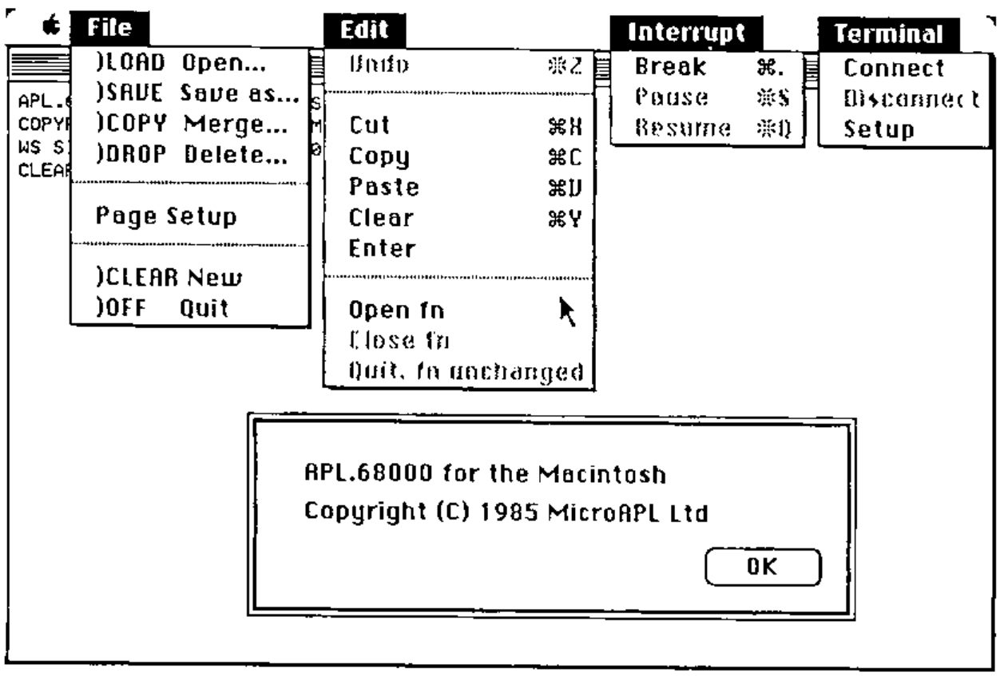
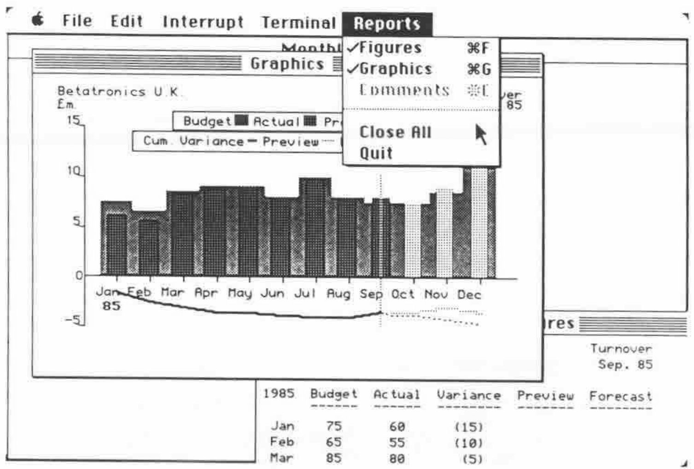

APL.68000 for the Apple Macintosh
Vector 3:3, page 54
Transcribed from the printed issue; not yet reviewed. Read it in the PDF of the issue, page 54
The Macintosh was the first readily available computer to use the concepts of mice, windows and pull-down menus to build a user interface, and whatever you think of this approach yourself much of the strength of the Macintosh is that nearly all of the software you run on it will offer the same working environment and access methods.
This poses interesting problems for the writers of Macintosh programming languages; they must provide:
a) a Macintosh-style interface for the potential programmer (who is, after all, a user as well);
b) a respectable programming language;
c) a means for that programmer to provide a Macintosh-style interface for the users of their program in turn. This review will attempt to describe how MicroAPL have fared in each of these three areas.
The APL.68000 interpreter is in fact very comfortable to use, and integrates nicely into the Macintosh environment. To start the interpreter you may either use the mouse to point to the interpreter itself, which loads and gives you a CLEAR workspace, or point to a workspace file on disc which will invoke the interpreter and automatically load the workspace selected. (Macintosh owners note: obviously you don’t just point to these things you double-click on them, but I want to avoid as much MacJargon, sorry Macintosh jargon, as possible in this review.)
When loaded, the interpreter offers you a 24 by 80 text window, which can be moved about the screen but not re-sized. At the top you have a choice of four menus which control the APL environment, including the editing and running of functions (see figure 1). I particularly like the File menu which offers you both the APL and the Macintosh descriptions of workspace loading/copying etc.

When you select an option from the File menu a window appears asking you to select the name of the workspace desired from a menu (the menu scrolls if you have more than eight workspaces on the disc). You also have the option to cancel the request or change disc drives of you wish. This is all just like the standard Macintosh approach but I found two oddities: first whether you are loading, copying, merging or deleting, the text on the window says “open” i.e. load a workspace – this led me to accidentally delete on of the workspaces provided with the system; second I could find no way to save a workspace of the same name as one already existing on the disc – very frustrating!
Editing a function is done via the Edit menu (surprise!). The edit window is large and scrolls in all four directions, again in the standard Macintosh manner. The APL character font is small but perfectly readable. Editing is peformed using the Macintosh “cut and paste” approach which is essentially a set of highly flexible block move/copy/delete operations. This is also standard Macintosh style but I found it a bit awkward; I kept having to take my hands off the keyboard to use the mouse and in particular it is very frustrating not being able to move the cursor from the keyboard. My normal style of APL programming is to write a line of code from left to right leaving gaps or pairs of parentheses for bits I am going to come back and fill in later; this involves a lot of cursor work and is especially unsuited to use of a mouse. However after half an hour’s practice I had written some fairly long functions so perhaps familiarity will bring content.
There is no recognised “Break” key on the Macintosh keyboard so MicroAPL chose the cloverleaf key for this role which seems a reasonable choice; confirmed mousers can choose Break or Pause from the Interrupt menu which will normally be available whenever a program is running.
Unfortunately I had no facilities with which to try out the Terminal emulation menu, so all I can report is that it offers the standard VT52 protocol and a wide variety of option selections.
Moving onto the interpreter itself, the language is a full implementation of APL.68000 which is jolly good news; what everybody wants to see of course is the benchmarks. The first few columns of this table were cribbed from VECTOR Volume 1, Number 4.
UPDATED ‘SMITH’ BENCHMARKS¶
| IBM PC | IBM PC | SPECTRUM | QL | MACINTOSH | |
|---|---|---|---|---|---|
| CHIP: | 8088 | 8088 | 68000 | 68008 | 68000 |
| APL: | IBM APL | APL*PLUS | APL.68000 | QL/APL(K) | APL.68000 |
| VERSION: | 1.00 | 2.6 | 4.10/B | 1.03 | 1.0 |
| BENCHMARKS: | |||||
Z←+/VI |
90 | 102 | 26 | 54 | 18 |
Z←∨/VL |
0.4 | 3 | 6 | 16 | 2 |
Z←⌊/[1]MI |
40 | 25 | 20 | 42 | 11 |
Z←VI*.1 |
390 | 282 | 4312 | 6824 | 3494 |
Z←\|VR |
80 | 79 | 87 | 169 | 64 |
Z←VR[VI[⍳20]] |
20 | 14 | 23 | 51 | 12 |
Z←VI[⍒VI] |
600 | 112 | 190 | 325 | 150 |
Z←¯2 1↑MR |
9 | 24 | 12 | 27 | 4 |
Z←VI∊VI |
150 | 146 | 217 | 202 | 100 |
Z←2 1⍉MC |
450 | 60 | 188 | 355 | 141 |
Z←VC∘.=VC |
360 | 141 | 158 | 363 | 117 |
Z←(⍳50)∘.+⍳50 |
2530 | 439 | 241 | 535 | 165 |
Z←VR⌊.+VR |
210 | 341 | 192 | 340 | 148 |
Z←MR⌹10↑VR |
70 | 1488 | 340 | 559 | 270 |
Z←FIB |
2200 | 3827 | 1654 | 3250 | 1255 |
Z←VR×3.14 |
100 | 136 | 229 | 396 | 180 |
Z←VR÷3.14 |
110 | 142 | 389 | 541 | 306 |
Z←⍟VR |
150 | 143 | 2428 | 3807 | 1968 |
Z←1○VR×.1 |
411 | 438 | 3462 | 4559 | 2256 |
As you can see it is very fast!
The last hurdle to clear is making use of the Macintosh graphics facilities from within APL, the “Toolbox” of special purpose routines in the Macintosh ROM. MicroAPL provide a selection of several workspaces to this end, each containing a set of assembler routines accessible from APL to control such things as menus, the mouse, graphics windows etc. I was unable to find any aspect of the Macintosh interface that I couldn’t control with these routines and they are very reasonably sized, taking up 60K of a 272K workspace if you load everything in.
Using these routines you can create your own menus and menu bars, over-riding the standard options if you wish, track the movement of the mouse, make windows pop up all over the place and generally dazzle users with any amount of pyrotechnics. You also have full access to the standard Macintosh data-transfer facilities, the “Scrapbook” and “Clipboard”. The graphics routines are particularly impressive. Standard functions let you create lines, circles, ovals ,boxes and arbitrary polygons, filled or not with whatever pattern you desire; and these functions are in themselves quite fast. However by using the MAKEPICTURE command the output from these functions can be coded into an integer vector (which I presume is a set of calls to the ROM); in itself quite small this vector can be processed to re-draw the original image at blinding speed. As a small example of what can be achieved I offer figure 3, which shows my favourite “half-hour” database with graphics, customised menus and a choice of output windows, the entire screen taking perhaps two seconds to draw.
In short this must be the best APL currently available for the Macintosh and quite likely one of the best available for any PC. Highly recommended.
